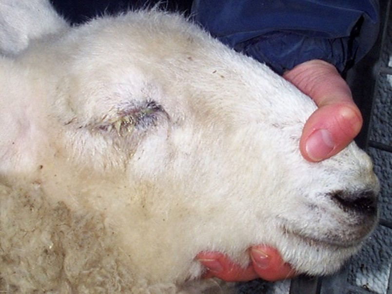
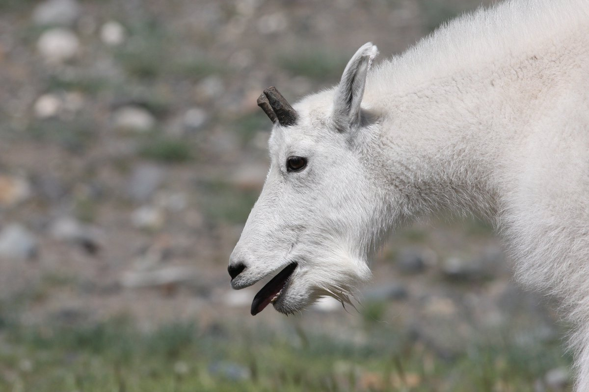
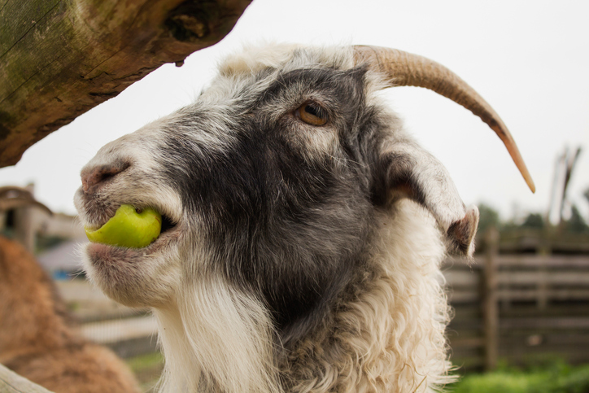
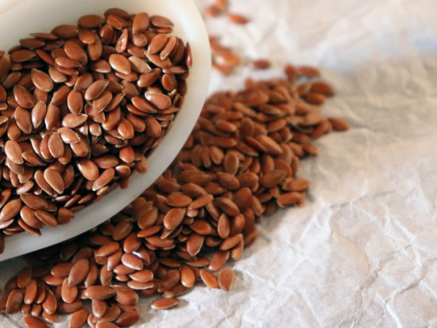
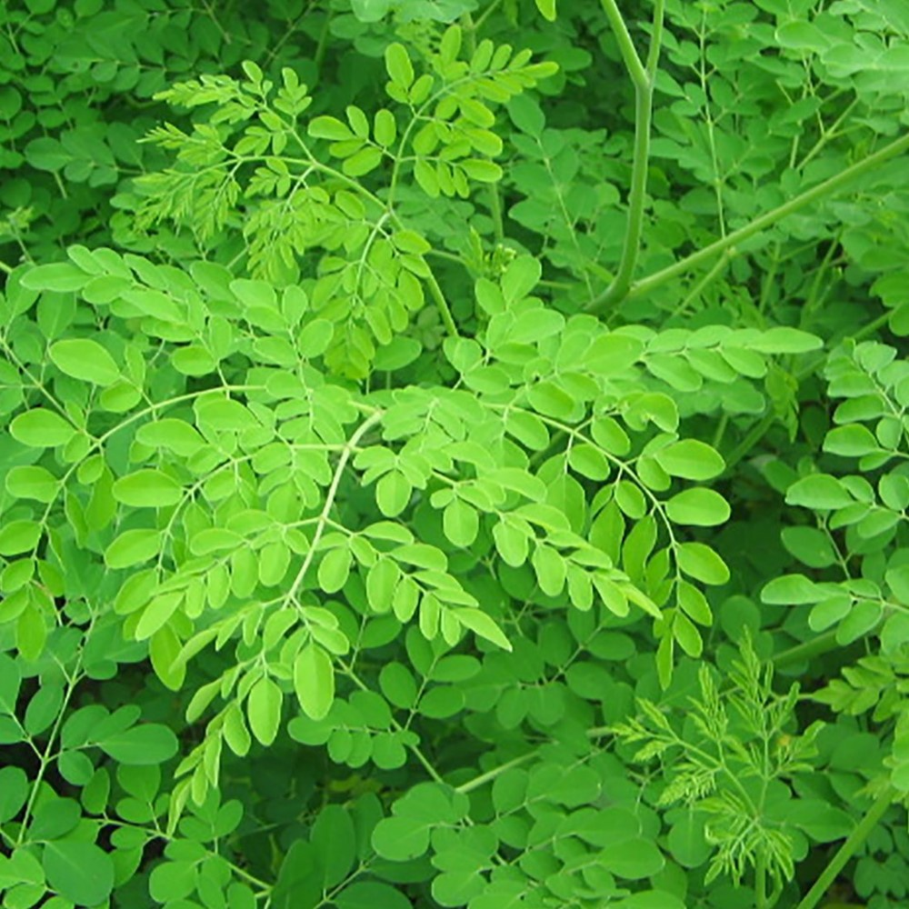
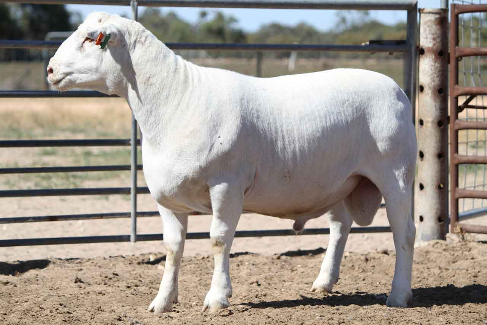
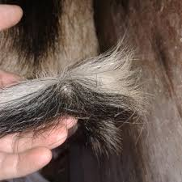

Tested Formula And Treatments From Home Remedies
Diet Based On TMR>>>
(Desi Treatment/Treatment From Home Remedies)
I have tried these formulas and treatments and they have worked perfectly
(For Watery Eyes)

Use smoke
Use a drop of honey
Use cutted onion
Use rasomycin injection
(Gasping/Hapna)

Use taramira (arugula) oil, Mustard (sarson) oil, Sesame (till) oil mix it up with
half kg sugar and heat it
Use this formula at a sunny time
(Intake of sour minerals)

Provide lemon a month before delivery of a kid because it cleans the Udder
(Goat not coming in heat)

Use flax (alsi) seeds boiled in water
OR
Use flax (alsi) seed oil
(Running Nose And Fever)
 Green tea can be used for kids
Apply salt and oil on nose
Green tea can be used for kids
Apply salt and oil on nose
.(Moringa Leaves)

Moringa leaves are rich in protein
Should be used as a supplement
(For Constipation)
 Use chuarqa 50 ml mix with some oil
Use chuarqa 50 ml mix with some oil
(Goat Fattening)

Use half kg milk with 50gm wheat and 100gm dalda ghee use it in the morning and overnight
Use boiled potato with 100gm ghee mix with sugar/gurr use it only at a night time
(Copper Deficiency)

Sign Of Copper Deficiency
The tail of the buck starts to take an image of fish tail, hairs starts to fall.The coat of the body
gets rough,
there would be a hair fall from surrounding of eyes
Preventions
Use copper capsules
120 kg buck needs 3 capsules in 15 days and then again 3 capsules after 5 months in 15 days
So a goat requires atleast 6 capsules of copper in a year